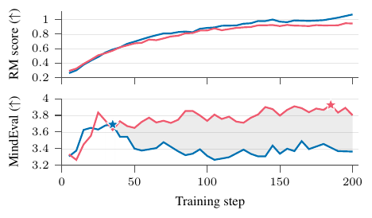
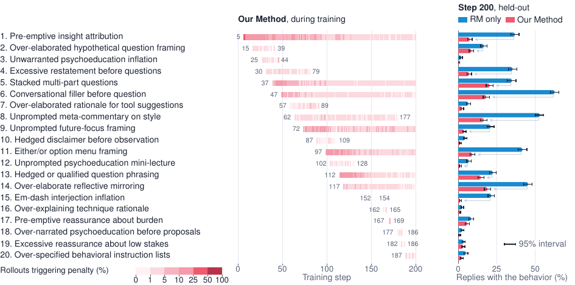
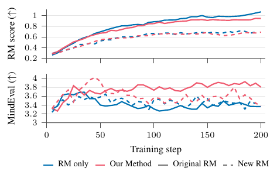

GRPO-like sur reward model de préférence seul (Bradley-Terry), où un second LLM relit périodiquement les rollouts à avantage positif et écrit des pénalités en langue naturelle qu'un troisième LLM applique en binaire à chaque rollout : r_t = r_RM − λ Σ_{j∈B_t} h_j, λ = 0,5, buffer B_t mis à jour toutes les 5 steps, de façon asynchrone [Éq. 3, §3, §4].
Claim principal, formulé précisément : sur deux tâches ouvertes, l'entraînement sur le RM seul fait monter le score RM en continu pendant que le benchmark externe décline, et le remplacement du reward par r_RM − 0,5·(nombre de pénalités actives déclenchées) repousse ce déclin, avec un gain final de +0,43 MindEval (clinique) et +5,7 EQ-Bench CW v3 (écriture) sur 200 steps [Tab. 1].
⚠️ Le déclencheur de chaque réécriture du reward est strictement interne au run (signe de l'avantage calculé sur le RM lui-même). Aucun label humain, aucun oracle, aucun benchmark n'entre dans la boucle de pénalités. Les benchmarks externes servent à évaluer des checkpoints, jamais à déclencher. Voir §5 et la mission de vérification ci-dessous.
Quantité qui change : la composition de l'ensemble B_t de pénalités, pas un poids. λ = 0,5 est fixe sur tout le run et sur les deux tâches [§4, « Penalty configuration »]. Le RM n'est jamais retouché (sauf l'expérience dédiée §5.4). Ce qui bouge, c'est donc le nombre de termes du reward, chacun valant exactement −0,5 — une pénalité h_j ∈ {0,1} par comportement, agrégée en somme additive non bornée, sans clause d'échec, sans plafond.
Cadence : proposition toutes les k = 5 training steps, sur 32 rollouts du batch précédent (2 tirés au hasard dans chacun des 16 groupes) ; au plus une nouvelle pénalité acceptée par cycle ; retrait vérifié à chaque step [§3]. Observé en clinique : 20 pénalités introduites et ~13 retirées sur 200 steps [Fig. 3, Tab. 4] ⇒ ~33 versions successives de la fonction de reward, soit un changement tous les ~6 steps. Et le buffer papillonne : pénalité 15 vivante aux steps 152–154, 16 à 162–165, 17 à 167–169, 18/19 retirées au step 186 [Fig. 3] — des termes de reward qui apparaissent et disparaissent en 2 à 5 steps.
Signal de déclenchement — le point décisif : le proposer reçoit les 32 rollouts, leurs scores RM, et une étiquette HIGHER-scored / LOWER-scored dérivée du signe de l'avantage calculé avec le score RM [§3 ; prompt recopié App. C]. Le prompt lui ordonne : « Focus ONLY on criteria present on the HIGHER-scored responses » et « Do NOT report lower-scored flaws ». Critère d'acceptation : « evidence for it in at least two groups » [§4]. ⇒ 100 % interne au run. Aucun label humain, aucun oracle, aucun benchmark tenu hors reward n'alimente la boucle. MindEval et EQ-Bench n'apparaissent que comme métriques de lecture sur checkpoints.
Qui décide : trois agents automatiques, zéro humain à aucune étape (les auteurs ne prétendent nulle part le contraire).
1. Proposition — un LLM (GLM 5.2), prompt système recopié intégralement [App. C].
2. Dédoublonnage — un second passage LLM, prompt recopié, qui classe chaque candidat covered_by / duplicate_of ; « Be strict: when in doubt, mark it covered » [App. C].
3. Retrait — une règle arithmétique : « A penalty is removed only if it is not triggered by any of the sampled rollouts in a given step » [§3]. ⚠️ Ambiguïté non levée : « sampled rollouts » = les 32 du proposer, ou les 512 jugés ? Le texte dit « sampled », la Fig. 3 parle de « rollouts scored for that criterion ». Si c'est 32, une pénalité à 3 % de prévalence a ~38 % de chance de 0 hit et d'être retirée par bruit d'échantillonnage — ce qui est précisément la signature du papillonnage ci-dessus et des réintroductions (« Excessive length inflation » aux steps 25 et 45 [Tab. 4]).
4. Application — un troisième LLM (Qwen3.6-35B-A3B) rend les verdicts h_j sur chaque rollout, toutes pénalités évaluées en un seul passage de juge pour le coût [§4]. Température du juge : non précisé. Le juge ne voit qu'une seule réponse + son historique — règle inscrite dans le prompt de découverte : « decidable from a single reply alone (never by comparing it to other replies) » [App. C]. Donc le juge ne voit jamais la trajectoire ni la distribution, alors que le papier définit lui-même le hacking comme un phénomène distributionnel (« starting a reply with "Okay" is harmless, but starting most replies with it is not » [§3, note 4]). ⚠️ Tension structurelle assumée mais non traitée : un prédicat mono-réponse est utilisé comme proxy d'une propriété de population.
Verdict (a) — la méthode est, au sens de 2609.35677, sans fondement théorique comme détecteur de hacking. Le déclencheur est une fonction des seules observations du run (scores RM et avantages), exactement l'objet que la Prop. 4.1 interdit d'utiliser pour séparer un run hacké d'un run sain. Les auteurs ne le discutent pas et citent au contraire baker2025monitoring / korbak2025monitorability comme autorisation de « laisser un LLM surveiller » [§3].
⚠️ Pourquoi ça marche quand même — mon analyse, pas celle des auteurs. Trois raisons, par ordre de force :
1. Le reward d'un rollout passé est-il rejouable à l'identique ? Non, et le papier ne l'évoque jamais.
- Ce qui est journalisé, et c'est beaucoup : le texte intégral de chaque pénalité avec son step de création [Tab. 5 clinique, Tab. 6 multi-tour, Tab. 7 new-RM, Tab. 8 écriture], la liste chronologique des introductions [Tab. 4], et les taux de déclenchement par step sans lissage [Fig. 3, Fig. 7]. ⚠️ C'est l'avantage réel et sous-estimé de cette méthode sur 2609.35646 : la partie non stationnaire du reward est exprimée en langue naturelle lisible, donc relisible et signable par un expert a posteriori, pénalité par pénalité — alors qu'un paramètre de difficulté réajusté en ligne n'est signable par personne.
- Ce qui manque pour le rejeu : aucun hash de version, aucun journal formel des retraits (les steps de retrait ne se lisent que comme fin de barre sur la Fig. 3), et un aveu explicite en App. D — « Asynchronous scoring can produce observations after a criterion is discarded » ⇒ l'ensemble actif à un step donné n'est pas exactement récupérable. S'ajoute un juge LLM à température non précisée, dont la reproductibilité n'est mesurée nulle part : même avec le bon buffer, h_j ne rejoue pas à l'identique. Et les rollouts périmés de plus de 8 steps sont jetés [§4], ce qui mélange une seconde source de non-déterminisme.
- Le papier ne revendique ni ne mesure la replayabilité : non précisé.
2. Effet de la non-stationnarité sur l'optimisation : jamais mesuré. Aucune variance de reward, aucune entropie, aucune norme de gradient, aucune KL rapportée, aucune analyse d'oscillation ou de divergence. Les seules courbes sont score RM et benchmark [Fig. 2, 5, 6]. Le papillonnage du buffer (§(a)) est visible dans leur propre Fig. 3 et non commenté.
3. Bras gelé à budget apparié : absent. L'unique baseline est RM only — c'est-à-dire aucune pénalité, pas des pénalités figées. Il n'existe nulle part :
- ni bras « B_200 figé dès le step 0 » (les 20 pénalités finales, connues, texte publié),
- ni bras « pénalités transplantées de l'autre run / de l'autre tâche »,
- ni balayage de λ, ni de k.
⇒ Ce que coûte le gel n'est pas mesuré ici. L'arbitrage que vous accepteriez chez 2609.35646 (0,5 pt contre un reward signable) ne peut pas être évalué sur ce papier : il faudrait exactement un run supplémentaire, dont tout le matériel est déjà disponible dans leurs propres tableaux. ⚠️ C'est l'expérience manquante la plus grave, et la moins chère.
4. Budget de calcul : il n'y a pas de chiffre. L'App. B « Compute Usage » tient en une phrase inachevée : « All experiments are based on either Blackwell Ultra B300 systems » — « either » sans « or », pas de GPU-heures, pas de coût par step, pas de surcoût de juge. Le papier reconnaît le surcoût en Limitations (« applying the penalty judge to every rollout adds computational overhead ») sans le quantifier. ⇒ aucune comparaison à budget apparié n'est possible, puisque Dynalize ajoute 512 appels de juge par step plus un appel de proposer tous les 5 steps, contre 0 pour RM-only.
(i) Bras placebo — absent, et l'hypothèse adverse survit intégralement. Aucun bras à pénalités aléatoires, permutées, ou de même magnitude et cadence mais hors sujet. Donc rien ne sépare « réécrire intelligemment » de « bouger le reward empêche de s'y ajuster ». Deux éléments renforcent l'hypothèse adverse : - Chronologie. En clinique, la pénalité 1 entre au step 5 [Tab. 4] mais les deux courbes MindEval sont indiscernables jusqu'au step ~40 [Fig. 2a] ; la divergence coïncide avec l'effondrement de RM-only après son propre pic (~step 35), pas avec l'entrée d'une pénalité particulière. En écriture, les courbes sont indiscernables jusqu'au step ~140 [Fig. 2b] alors que 6 pénalités sont déjà actives au step 50 [Tab. 4]. Le gain n'est donc attribuable à aucune pénalité identifiée. - Pente du reward. Dynalize monte systématiquement moins vite sur le RM (End : 0,92 vs 1,00 ; 10,93 vs 12,19 [Tab. 1]). « C'est un optimiseur plus lent du même RM » est une lecture possible de la Tab. 1.
⚠️ Mais j'ai testé cette dernière lecture et elle ne tient pas. Le contrôle qui la tue est absent du papier, et pourtant lisible sur leurs figures : comparer les checkpoints à score RM apparié, pas à step apparié. Lecture graphique de Fig. 2a : RM-only atteint un score RM ≈ 0,9 vers le step ~130 avec un MindEval ≈ 3,35 ; Dynalize est à ≈ 0,9 avec un MindEval ≈ 3,8. Idem Fig. 2b : RM-only atteint 10,93 vers le step ~160 avec EQ-Bench ≈ 56–57, Dynalize y est à 60,5. À niveau de reward égal, Dynalize reste nettement meilleur — donc le gain n'est pas un simple ralentissement de la montée. (⚠️ Lecture graphique, ±0,05 sur l'axe RM ; aucun chiffre tabulé.) L'hypothèse « régularisation par instabilité » reste, elle, entièrement non testée.
(ii) Mesure directe du hacking — exogène dans la forme, circulaire dans la mesure fine.
- Définition opérationnelle : « a benchmark score that declines while the RM score keeps increasing as the signal of reward hacking » [§4]. Le benchmark est bien hors du reward. Sur la forme, c'est correct et c'est plus que ce que fait la moyenne du corpus.
- Mais : aucun taux de faux positifs du reward model par checkpoint contre une vérité exogène. FP et FN du RM : jamais mesurés, ni ensemble ni séparément. Le papier ne mesure pas non plus l'onset du hacking, seulement un pic de courbe.
- Et surtout : le taux de FP/FN du juge de pénalités h_j n'est mesuré nulle part, pas une fois dans tout le papier. Il n'y a aucune validation de l'instrument qui produit la moitié du reward. Or c'est ce même juge Qwen3.6-35B-A3B qui produit les prévalences de la Fig. 3 par lesquelles le papier démontre que les comportements ont disparu ⇒ circularité : « le comportement a reculé » est mesuré par l'instrument contre lequel la politique a été optimisée. On ne peut pas distinguer « la politique a abandonné le comportement » de « la politique a appris à échapper au juge ». Atténuation partielle, réelle : le panneau droit de Fig. 3 utilise le même juge pour les deux politiques sur prompts tenus à l'écart, ce qui contrôle le biais de juge entre bras, pas l'évasion.
- La seule evidence non circulaire du papier, et elle est bonne : trois mesures par appariement de chaîne de caractères, hors juge — réponses commençant par « Okay » 60 % → 3 %, nouvelles contenant « galactic » 99 % → 4 %, traces de raisonnement mentionnant r/WritingPrompts 59 % → 3 % [Fig. 4]. C'est le résultat le plus solide du papier, et le plus utile : il établit que (1) un RM de préférence peut collapser une politique sur un seul mot, (2) le motif contamine le raisonnement, que le RM ne score pas.
- Un chiffre annoncé que la figure ne porte pas : « over 90% of RM-only replies trigger at least one criterion, with over four criteria per reply on average, against fewer than two for Dynalize » [§5.2]. La Fig. 3 ne trace que des taux par critère, pas l'agrégat ≥1 ni la moyenne. ⇒ chiffre de texte seul, non recoupable.
(iii) Plafond de bruit — absent. Aucun accord inter-annotateurs, aucun accord juge↔humain, nulle part. ⚠️ Le papier sait que c'est le problème : sa note 1 d'introduction cite jafarimeimandi2026expert pour dire que « psychiatrists agree poorly when they rate LLM responses with a shared, calibrated rubric » — puis ne mesure rien. Ce qui existe, en s'en tenant à la taxonomie à trois quantités :
- Reproductibilité du juge (quantité 1) : « mean of four judge passes … 95 % bootstrap intervals over prompts » sur les panneaux droits de Fig. 3/7 [App. D]. C'est la seule barre d'erreur du papier.
- Accord inter-juges (quantité 2) : Tab. 3 — MindEval rejugé par Kimi-K3 et DeepSeek-V4.1-Flash sur les mêmes conversations. Les trois juges donnent le même signe et des deltas de fin de +0,45 / +0,46 / +0,64 (recoupés : 3,84−3,39 ; 4,05−3,59 ; 4,04−3,40 ✓). Contrôle nécessaire et bien fait, parce que le juge principal de MindEval est GLM 5.2, c'est-à-dire le proposer lui-même — les auteurs l'écrivent explicitement [App. A] et le corrigent. À leur crédit.
- Accord juge↔humain (quantité 3) : néant.
- ⚠️ Et le contrôle inter-juges n'existe pas pour creative writing : EQ-Bench CW v3 est jugé par GLM 5.2 seul [App. A], donc par le proposer, sans aucun contre-juge. Les gains les plus spectaculaires du papier (+5,7) sont ceux dont le juge est le moins contrôlé.
Clinical counseling [§4] — la politique écrit la réponse suivante d'un conseiller, étant donné une conversation multi-tour avec un patient. Prompts dérivés d'un dataset privé de 10 000 échantillons de conversations humaines réelles, anonymisé, non publiable [Ethical Considerations]. Évaluation tenue à l'écart : 1 000 conversations hors données d'entraînement [§5.2, note 8]. Pipeline de construction des prompts : non précisé. Distribution de difficulté : non précisée. Curriculum : aucun (les prompts sont tirés uniformément, rien n'indique l'inverse).
Creative writing [§4] — nouvelle courte sur prompt. 12 414 prompts uniques de LitBench-Train. Tenu à l'écart : les 971 prompts de LitBench-Test, « none of them in LitBench-Train ». Recoupement externe (API HF datasets-server, 2026-10-20) : LitBench-Train = 43 827 lignes, LitBench-Test = 2 381 lignes ⇒ 12 414 prompts uniques (≈ 3,5 paires/prompt) et 971 prompts de test (≈ 2,45 paires/prompt) sont cohérents, non vérifiés directement.
SFT/IFT avant RL : le modèle de base est une release déjà post-entraînée ; en clinique « it has gone further supervised fine-tuning for clinical appropriateness » [§4, note 5] — volume, données, recette : non précisés. ⚠️ Cela rend la comparaison entre les deux tâches bancale : la politique clinique part d'un SFT non documenté.
Contamination : séparation train/test propre et explicite des deux côtés. Aucune analyse de contamination du RM clinique (entraîné sur des préférences de psychologues cliniciens) vis-à-vis de MindEval — non précisé, et c'est un angle mort : rien ne dit que les conversations privées et les 50 profils de MindEval sont disjoints en distribution.
Coût humain, en heures et en qui : aucun chiffre. Le RM clinique est « a proprietary Bradley–Terry model trained on preferences derived from annotations from clinical psychologists » — ni le nombre d'annotateurs, ni les heures, ni le protocole, ni l'accord inter-annotateurs. Le RM original compte « approximately 30,000 samples » [§5.4] — c'est la seule trace du volume d'annotation. ⚠️ Pour un papier dont tout l'argument est « les préférences humaines encodent ce qu'on ne sait pas écrire », l'absence totale de description du processus d'annotation est la lacune la plus parlante.
Observation — single-turn : historique de conversation (clinique) ou prompt (écriture). Pas d'outils, pas d'exécution, pas de récupération. Il n'y a pas d'environnement au sens d'un harness : c'est un générateur de texte noté.
Espace d'actions : texte libre. Signatures d'outils : aucune. Pas de parsing de tool calls, donc aucune des pannes silencieuses d'infrastructure du corpus n'est applicable ici — inapplicable, et il faut le dire.
Horizon — single-turn pour les résultats principaux. Multi-turn en §5.3 (clinique seulement) : chaque rollout part d'une conversation du dataset, la politique répond, un simulateur d'usager (DeepSeek 4.1 Flash) écrit le message patient suivant, jusqu'à 4 réponses de politique par rollout. Le RM score chaque réponse de politique étant donné l'historique jusqu'à elle ; le reward du rollout est la moyenne de ces scores ; un seul avantage par rollout, appliqué aux tokens de toutes les réponses. Côté pénalités : le juge vérifie chaque réponse, et « the rollout is penalized once for each distinct penalty that any of its replies triggers » — donc une conjonction par OU sur les tours, ce qui sature vite sur 4 tours. ⚠️ Crédit par tour : aucun. Avantage uniforme sur tous les tours. Aucune permutation de crédits entre tours, aucun contrôle de densité — le contrôle que le corpus réclame est absent, et ici il serait peu coûteux.
Contexte long / compaction / troncature : non précisé. Aucun plafond de tokens annoncé, aucune politique de troncature, aucune mention de réponses tronquées ou mal formées. ⚠️ Lacune notable : le test de dépistage du « livrable tronqué » (juge qui accepte une réponse coupée net) n'est pas faisable sans ce chiffre, et avec un juge LLM mono-réponse c'est exactement le mode de panne attendu.
Déterminisme / reset / timeouts : non précisé. Un seul élément d'ordonnancement est donné : génération et entraînement asynchrones, rollouts de plus de 8 steps de retard jetés [§4].
Épisodes sans verdict : non précisé — on ne sait pas ce qui arrive quand le juge de pénalités renvoie du JSON invalide, ni si ces rollouts sont retirés du groupe ou scorés h_j = 0. ⚠️ Avec une somme de pénalités, un échec de parsing silencieusement traité en 0 est un faux négatif gratuit, donc un canal de hacking.
Exemple de trajectoire : oui, et c'est bien fait — 4 figures comparant RM-only et Dynalize sur des conversations identiques au step 200 [App. E, Fig. 8–11].
Type : hybride — RM de préférence Bradley-Terry (scalaire continu) moins une somme de verdicts binaires de juge LLM.
Règle d'agrégation [Éq. 3] : r_t(x,y) = r_RM(x,y) − λ Σ_{j∈B_t} h_j(x,y), λ = 0,5, h_j ∈ {0,1}.
- Somme pondérée additive, poids uniformes, sans clause d'échec, sans plafond, sans renormalisation. Pas de w_k/Σw_k — donc pas le canal de hacking par redistribution de masse de 2610.21214. C'est un bon point.
- Mais l'additivité non bornée crée son propre problème. ⚠️ Le dimensionnement de λ n'est justifié nulle part et n'est pas calibré sur l'échelle du RM. En clinique, le score RM moyen de fin vaut ≈ 1,00 [Tab. 1] : une seule pénalité déclenchée vaut la moitié du score RM typique, deux l'annulent. En écriture, le score RM vaut ≈ 12 : la même pénalité pèse 4 %. Même λ, deux régimes à deux ordres de grandeur d'écart, sans un mot. La quantité qui tranche vraiment est l'écart-type intra-groupe des scores RM (c'est lui qui détermine l'avantage, Éq. 2, et les auteurs ne divisent pas par l'écart-type [§2, note 3]) — et il n'est jamais rapporté. On ne peut donc pas savoir si la pénalité est un coup de pouce ou un veto de fait. Avec ~8 pénalités actives au step 200 [Fig. 3] et « fewer than two criteria per reply » [§5.2], le terme de pénalité pèse en clinique ≈ 1,0 — l'ordre de grandeur du score RM entier. La prétention « the RM still defines response quality » [§1] est, en clinique, arithmétiquement douteuse.
Granularité : outcome (livrable final) pour le RM ; process non — le juge voit « ONLY ONE reply plus its conversation » [App. C], jamais la trajectoire ni le raisonnement. ⚠️ Ironie : le papier démontre que le hacking contamine le raisonnement (59 % des traces) tout en gardant un reward et un juge qui n'y regardent pas.
Juge LLM — recopié ? Oui, et c'est à leur crédit : les 4 prompts (découverte système/usager, dédoublonnage système/usager) sont reproduits verbatim en App. C, et les 35 pénalités avec leur description complète en App. F. Le prompt du juge d'application h_j, lui, n'est pas fourni — seule la règle est décrite. Modèles : proposer GLM 5.2, juge Qwen3.6-35B-A3B. Températures : non précisées pour le proposer comme pour le juge.
Fiabilité mesurée, FP et FN séparés : non mesurée, ni ensemble ni séparément, ni pour le RM, ni pour le juge de pénalités. Le mot « precision » / « recall » / « false positive » n'apparaît pas dans le papier. La seule chose approchante est l'accuracy du RM clinique sur son propre test set : 78,48 % (RM original) vs 78,61 % (RM réentraîné) [§5.4, note 9] — une accuracy de préférence sur un test set, sans FP/FN, sans ventilation, sans intervalle. ⚠️ Au passage, ce chiffre dit quelque chose de lourd : le RM réentraîné sur 15 000 paires ciblant exactement les comportements découverts n'améliore son accuracy que de 0,13 pt et reste hackable [§5.4]. Un RM à ~78 % d'accuracy de préférence est le socle de tout le pipeline.
Robustesse : le vérifieur a-t-il été attaqué ? Non, et c'est le trou central. Aucune sonde adversariale fixe rejouée à l'identique ; aucun test de délétion apparié (prendre des réponses jugées sans pénalité et y réinjecter le comportement, ou l'inverse) ; aucun test du livrable tronqué ; aucune solution dégénérée testée. On ne sait donc pas si les pénalités sont satisfaisables par paraphrase — le mode de panne exact que ce corpus nomme (« TNR qui s'effondre à TPR constant »), et que des pénalités en langue naturelle sur du texte long invitent par construction.
Ce que le reward ne voit pas : la couverture. Il n'y a aucun canal de crédit pour la complétude — seulement un RM de préférence et des pénalités négatives. Les pénalités ne peuvent que retirer ; rien n'ajoute du crédit pour avoir couvert un point attendu. ⚠️ Conséquence directe pour le droit en §9 : cette architecture est structurellement aveugle à l'omission, et la méthode ne fait qu'empirer les choses, puisque plusieurs pénalités récompensent mécaniquement la brièveté (« Excessive length inflation », « Unwarranted psychoeducation inflation », « Over-specified behavioral instruction lists »).
Algorithme [§2, note 3] : GRPO-like, avantage A_i = r_i − mean(r_group), sans division par l'écart-type du groupe (écart explicite au GRPO original). Loss = « default RL loss » de prime-rl au commit cabbd132 : terme de policy-gradient clippé de DPPO + régulariseur KL façon Kimi K2.5. Recoupement sur le dépôt référencé (vérifié 2026-10-20) : la doc de ce commit confirme « DPPO policy-gradient term combined with a KL regularizer similar to Kimi-K2.5 » et donne les défauts dppo_mask_low/high = 0.2/0.2, adv_tau = 1.0, kl_tau = 1e-3. ⚠️ Le papier ne dit pas s'il a utilisé ces défauts : le coefficient de KL, le clipping et le modèle de référence sont donc non précisés côté papier.
Hyperparamètres donnés [§4] : 200 steps · batch de 512 rollouts = 32 prompts × G = 16 · température 1 · toutes les poids mis à jour · AdamW, LR constant 1e-6, weight decay 0,01 · génération et entraînement asynchrones, rollouts périmés de > 8 steps jetés. Non précisés : longueur max de génération, warmup, clip de gradient, taille de micro-batch, nombre d'époques par batch (on/off-policy ratio), coefficient de KL, modèle de référence, seeds.
Stabilité : rien. Aucun incident rapporté, aucune réparation décrite, aucune courbe d'entropie, de longueur, de norme de gradient ou de KL. Les seules dynamiques tracées sont score RM et benchmark [Fig. 2, 5, 6]. ⚠️ Pour une méthode dont le reward change ~33 fois en 200 steps, l'absence totale de diagnostic d'optimisation est le manque le plus frappant de cette section — cf. (b).
Compute : voir (b) point 4 — App. B est une phrase inachevée, aucun chiffre.
C'est le cœur du papier, et le catalogue est sérieux. Chaque cas : comportement → détection → correction → la correction est-elle évaluée ?
| Comportement | Détection | Correction | Évaluée ? |
|---|---|---|---|
| Collapse lexical d'ouverture — « Okay » en tête de réponse, ~0 % → 60 % sous RM-only | appariement de chaîne sur 1 000 prompts tenus à l'écart [Fig. 4] | pénalité « Conversational filler before question », entrée au step 47 | Oui, hors juge : 60 % → 3 %. La meilleure evidence du papier |
| Collapse thématique — « galactic » dans ~99 % des nouvelles sous RM-only | appariement de chaîne, 971 prompts de LitBench-Test [Fig. 4] |
pénalités « Overblown cosmic-scale power creep » (step 40), « Society-transformation narrative sprawl » (100) | Oui, hors juge : 99 % → 4 % |
| Contamination du raisonnement — mentions de r/WritingPrompts dans les traces, 1 % → 59 % | appariement de chaîne sur les traces [Fig. 4] | aucune pénalité ne cible le raisonnement (le juge ne le voit pas) | Oui : 3 % sous Dynalize. ⚠️ Suppression par effet de bord, non ciblée — le mécanisme n'est pas expliqué |
| Inflation de longueur / empilement de questions / structure gabarit | proposer [Tab. 4 : 20 + 15 pénalités] | pénalités dédiées | Partiellement, et circulairement : via les prévalences du juge [Fig. 3] |
| Dégradation de l'axe « AI-Specific Communication Quality » (naturel, non répété, non gabarit) : 3,29 au pic → 2,52 en fin sous RM-only, la plus forte chute des 5 axes | ventilation par axe MindEval [Tab. 2] | — | Oui : Dynalize à 3,66, soit +1,14 sur RM-only fin. ⚠️ Ventilation par axe faite — mais pas par sous-population critique (sévérité clinique, cas à risque) |
| Le RM réentraîné reste hackable [§5.4] | run dédié avec un RM augmenté de ~15 000 paires ciblées | réentraînement du RM | Oui, et le résultat est négatif : même motif de déclin ; les pénalités découvertes avec le nouveau RM sont « mostly different » [Tab. 7] ⇒ le hacking se déplace, il ne disparaît pas |
| Le multi-tour ne protège pas [§5.3] | run multi-tour avec simulateur d'usager | hypothèse : le RM voit ses propres tours passés et devrait pénaliser la répétition | Oui, résultat négatif : même motif ; 13 pénalités, « partly the same », dont stacked questions et option-based framing |
Failure modes de la méthode elle-même, non traités par les auteurs :
- ⚠️ Papillonnage du buffer : pénalités vivantes 2 à 5 steps, réintroductions [Fig. 3, Tab. 4] — visible dans leurs données, non analysé.
- ⚠️ Dérive d'échelle de λ : le poids relatif du canal de pénalité croît avec |B_t| sans plafond, et la méthode glisse silencieusement de « RM + nudge » vers « surtout des pénalités » (§3).
- ⚠️ Évasion du juge indistinguable de l'abandon du comportement (§(c)(ii)).
- ⚠️ Pénalisation de la qualité légitime : le prompt l'anticipe (« An empty list is always better than placing a penalty on genuine quality », « Narrow the scope so a normal, high-quality reply does not accidentally trigger it » [App. C]) — garde-fou purement déclaratif, dans un prompt, jamais vérifié mécaniquement. C'est exactement le reproche que le corpus adresse à 2610.02824.
- Les auteurs reconnaissent en Limitations : un seul type de tâche par run (pas de multi-environnement), et surtout « our method can only detect what models explicitly generate … it cannot preemptively prevent hacking ». Section Limitations honnête et courte.
Très peu. Ce qui est dit : génération et entraînement asynchrones, rollouts > 8 steps de retard jetés [§4] ; proposition et mise à jour du buffer asynchrones, « the updated set takes effect at the next batch of rollouts » [§3] ; toutes les pénalités évaluées en un seul passage de juge pour contenir le coût quand |B_t| croît [§3] ; juge volontairement petit (35B-A3B) parce qu'il tourne sur chaque rollout, proposer volontairement gros (GLM 5.2) parce qu'il ne bloque rien [§4] ; matériel « Blackwell Ultra B300 » [App. B].
Non précisés : débit de rollouts, GPU-heures, coût par step, surcoût du juge en %, nombre de répliques d'inférence, parallélisme, goulots. ⚠️ Le design asynchrone est l'apport d'ingénierie le plus réutilisable du papier (un gros auditeur hors du chemin critique, un petit juge dessus) et il n'est appuyé par aucun chiffre.
| # | Claim (abstract / intro) | Source dans le corps | Verdict |
|---|---|---|---|
| 1 | « training on the reward model alone raises its score continuously but ultimately leads to a decline in external benchmarks » | Fig. 2 + Tab. 1 : clinique MindEval pic 3,69 (≈ step 35) → fin 3,37, score RM 1,00 ; écriture EQ-Bench pic 58,9 → fin 54,8, score RM 12,19 | confirmé, sur les deux tâches |
| 2 | « Dynalize sustains longer training and results in improved downstream performance » | Tab. 1 : clinique Peak 3,92 (+0,23), End 3,84 (+0,45), Final 3,80 (+0,43) ; écriture Peak 62,1 (+3,2), End 60,8 (+4,8), Final 60,5 (+5,7) | confirmé pour les deltas. ⚠️ sur-généralisé sur « improved » : en clinique, Dynalize plafonne à ≈ 3,7–3,9 dès le step ~30 [Fig. 2a] — les 170 steps suivants rapportent ≈ +0,1 à +0,2 sur sa propre trajectoire ; l'essentiel du +0,45 « End » est la chute de RM-only, pas la montée de Dynalize |
| 3 | « suppresses patterns … that, without penalties, spread to most responses » | Fig. 4 : « Okay » 60 % → 3 % (clinique) ; « galactic » 99 % → 4 % (écriture) | confirmé, et par appariement de chaîne, donc hors du juge |
| 4 | « and even to the model's reasoning, which the reward model does not explicitly score » | Fig. 4 + §5.2 : mentions de r/WritingPrompts dans les traces 1 % → 59 % sous RM-only, 3 % sous Dynalize | confirmé |
| 5 | « its gains hold in multi-turn training » | Fig. 5 seulement — aucun tableau, aucun chiffre dans le texte ni en annexe pour ce run | introuvable comme chiffre ; qualitativement cohérent à la lecture graphique (même écart ≈ 0,4–0,5 MindEval en fin) |
| 6 | « and even after we retrain the reward model on the discovered behaviors » | Fig. 6 seulement — aucun tableau, aucun chiffre | sur-généralisé. L'écart relatif à RM-only tient. Mais la courbe « Our Method + New RM » (rouge pointillé) culmine vers le step ~45 puis décline et finit nettement sous « Our Method + Original RM » — ⚠️ c'est-à-dire que Dynalize se fait lui aussi hacker sur le RM réentraîné. Le texte ne parle du déclin qu'à propos de RM-only. (Lecture graphique ; aucun chiffre tabulé pour l'opposer) |
| 7 | « reward models are easily "hacked" » (contribution 2, intro) | §5.1, Fig. 2 ; corroboré par §5.3 (multi-tour) et §5.4 (RM réentraîné) | confirmé dans ce réglage ; sur-généralisé hors de lui : 2 tâches, 1 famille de politique (Qwen3.5-35B-A3B), 1 run par condition, 200 steps |
| 8 | « which behaviors the proposer discovers … how widespread they are without penalties » (contribution 3) | Tab. 4 (20 + 15 pénalités avec steps), Tab. 5–8 (descriptions complètes), Fig. 3 / Fig. 7 (taux par step) | confirmé — c'est la partie la mieux documentée du papier |
| 9 | « over 90% of RM-only replies trigger at least one criterion, with over four criteria per reply on average, against fewer than two » [§5.2] | Fig. 3, panneau droit — qui ne trace que des taux par critère | introuvable : l'agrégat « ≥ 1 critère » et la moyenne par réponse ne figurent sur aucune figure ni table |
| 10 | « the average number of criteria per reply almost triples from the start to the end of training » [§5.2] | — | introuvable : aucune figure ne trace cette série |
| 11 | « The original and new reward models achieve similar mean accuracy » : 78,48 % vs 78,61 % [§5.4, note 9] | note de bas de page uniquement | confirmé comme énoncé ; aucun intervalle, aucune ventilation, aucun FP/FN |
| 12 | « the three judges agree … by 0.45, 0.46 and 0.64 points » [App. A] | Tab. 3 | confirmé, recoupé arithmétiquement : 3,84−3,39 = 0,45 ✓ ; 4,05−3,59 = 0,46 ✓ ; 4,04−3,40 = 0,64 ✓ |
Verdict 7.0 : 6 confirmés, 1 confirmé-avec-sur-généralisation, 1 sur-généralisé, 3 introuvables comme chiffres, 0 contredit. Aucun chiffre de l'abstract n'est faux ; la Tab. 1 porte exactement ce que l'abstract annonce. Les faiblesses sont (i) deux expériences d'extension présentées en figure seule, dont l'une (new RM) cache un déclin de la méthode elle-même, (ii) trois chiffres de texte non recoupables.
| Clinique (MindEval, 1–6) | Écriture (EQ-Bench CW v3, 0–100) | |
|---|---|---|
| RM only — Peak / End / Final | 3,69 / 3,39 / 3,37 | 58,9 / 56,0 / 54,8 |
| Dynalize — Peak / End / Final | 3,92 / 3,84 / 3,80 | 62,1 / 60,8 / 60,5 |
| Delta Final | +0,43 | +5,7 |
| Score RM (moyenne End) | 1,00 → 0,92 | 12,19 → 10,93 |
| Pénalités découvertes (200 steps) | 20 | 15 |
Par axe MindEval [Tab. 2], Dynalize en tête sur les 5 : Clinical accuracy 3,54 → 3,73 (+0,19) · Ethical & prof. 3,98 → 4,32 (+0,34) · Assessment 3,37 → 3,72 (+0,35) · Therapeutic alliance 3,51 → 3,79 (+0,28) · AI-specific comm. quality 2,52 → 3,66 (+1,14). ⚠️ Le gain est très concentré sur l'axe « naturel / non gabarit » — c'est-à-dire l'axe que les pénalités ciblent directement. Sur l'axe le plus proche du fond (clinical accuracy), le gain est de +0,19, et Dynalize fin (3,73) dépasse à peine RM-only pic (3,66). ⚠️ Lecture honnête : la méthode corrige surtout du style.
Tout est in-distribution : chaque run est évalué sur le benchmark de sa tâche. Aucun transfert mesuré — pas d'évaluation de la politique clinique sur un benchmark général, pas de test de régression sur des capacités hors tâche, pas de ventilation par sous-population. Les auteurs le reconnaissent en Limitations (« a single task with environments that are similar across all training data »). ⚠️ Avec un reward constitué d'environ 20 interdits stylistiques, le risque de dégradation hors distribution est exactement le genre de chose qui « disparaît sans signature » — et rien ne le mesure.
Ablations : aucune. Pas de balayage de λ, pas de k, pas de taille d'échantillon du proposer (32), pas de seuil « ≥ 2 groupes », pas de bras à buffer gelé, pas de placebo aléatoire, pas de bras « pénalité de longueur seule », pas de proposer alternatif, pas de juge alternatif pour h_j. §5.3 (multi-tour) et §5.4 (RM réentraîné) sont des extensions, pas des ablations : elles ne retirent aucun composant de la méthode.
Scaling : aucun. Une taille de politique (35B-A3B), un horizon (200 steps).
| Case | ✓/✗ | Justification en une ligne |
|---|---|---|
baselines |
✗ | Unique contrôle = RM-only (aucune pénalité), apparié sur modèle/steps/data/batch mais pas sur le budget de juge (Dynalize ajoute 512 appels/step + 1 proposer/5 steps, contre 0) ; aucun chiffre de compute [App. B inachevée] ; aucune mitigation alternative en baseline |
ablation |
✗ | Zéro ablation ; aucun composant jamais retiré ; λ, k, seuil et règle de retrait tous non balayés |
variance |
✗ | Un run par condition, aucune seed, aucun IC sur Tab. 1–3 ; seules barres d'erreur = bootstrap 95 % sur prompts dans les panneaux droits de Fig. 3/7 ; en écriture, l'oscillation step-à-step visible de l'EQ-Bench (±2 pts [Fig. 2b]) est du même ordre que le delta Peak annoncé (+3,2) |
coherence |
✓ | Verdict 7.0 : 0 contredit, Tab. 1 porte exactement les claims de l'abstract. Case accordée de justesse — deux claims d'extension n'ont aucun chiffre et l'une est sur-généralisée |
eval |
✗ | Séparation train/test propre, mais : MindEval tourné hors spec (GLM 5.2 remplace juge et simulateur), juge MindEval = proposer, EQ-Bench jugé par le proposer sans aucun contre-juge, zéro validation juge↔humain, zéro plafond de bruit, zéro FP/FN de h_j |
repro |
✗ | Code « upon acceptance » ; dataset clinique privé et non publiable ; RM clinique propriétaire. URLs testées sur leur contenu 2026-10-20 : 6/6 HTTP 200 (LitBench-Train 43 827 lignes, Llama8B-CreativeWritingVerifier, Qwen3.5-35B-A3B, GLM-5.2, Qwen3.6-35B-A3B, doc+loss prime-rl@cabbd132) — la moitié « écriture » serait reproductible si le code d'orchestration existait |
evidence : 1/6 (manquant : baselines, ablation, variance, eval, repro).
Plausible mais fragile — à répliquer, et le diagnostic vaut plus que la méthode.
Ce que je tiens pour établi par ce papier, et qui est utile : 1. Un RM de préférence Bradley-Terry entraîné sur annotations de psychologues cliniciens collapse une politique 35B sur un mot d'ouverture (« Okay » ≈ 1 % → 60 % en 200 steps, ≈ 28 % dès le step 100 [Fig. 4]), et un RM de creative writing la collapse sur un thème (« galactic » dans 99 % des nouvelles). Mesuré par appariement de chaîne, hors de tout juge. Non contestable. 2. Le motif contamine le raisonnement que le RM ne score pas (1 % → 59 %). Résultat important et rarement montré. 3. Réentraîner le RM sur les comportements découverts ne règle rien : accuracy +0,13 pt, hacking identique, nouveaux motifs « mostly different » [§5.4]. Et le multi-tour non plus [§5.3]. Deux résultats négatifs soignés, qui valent chacun un run. 4. L'onset est précoce : en clinique, MindEval pique au step ~35 sur 200 [Fig. 2a]. Cohérent avec les onsets du corpus (100/170/250/450) par le bas — donc ⚠️ 5 à 6 paliers avant le step 500 est un minimum, et ici il en aurait fallu avant le step 50.
Ce qui n'est pas établi : que la réécriture en ligne soit la cause du gain. Sans placebo, sans buffer gelé, sans ablation, sans seed, avec un juge non validé et un benchmark jugé par le proposer, l'attribution repose sur un run par condition. Mon contre-lecture « Dynalize n'est qu'un optimiseur plus lent du même RM » ne tient pas (comparaison à score RM apparié, §(c)(i)) ; la contre-lecture « réécrire le reward tous les 6 steps est une régularisation par instabilité » tient entièrement.

Ce qu'il faut voir : le panneau du haut est le proxy, celui du bas la vérité externe. Les deux politiques montent ensemble sur le RM jusqu'au step ~90, et les deux courbes MindEval sont indiscernables jusqu'au step ~40 : le gain annoncé n'est pas une montée de Dynalize, c'est l'effondrement de RM-only après son propre pic (étoile bleue, 3,69, step ~35) jusqu'à 3,37 — pendant que son score RM continue de grimper jusqu'à ~1,05. Dynalize plafonne à 3,7–3,9 dès le step 30 et y reste 170 steps. À retenir pour un env juridique : l'onset est au step ~35 sur un run de 200 — instrumenter le vérifieur « début et fin » n'aurait rien vu, il aurait fallu un palier avant le step 50.

Ce qu'il faut voir : c'est le journal de la non-stationnarité, et c'est la pièce la plus instructive du papier. À gauche, ~33 modifications de la fonction de reward en 200 steps : 20 ajouts (5, 15, 25, 30, 37, 47, 57, 62, 72, 87, 97, 102, 112, 117, 152, 162, 167, 177, 182, 187) et ~13 retraits — dont des pénalités vivantes 2 à 5 steps seulement (15 : 152–154 ; 16 : 162–165 ; 17 : 167–169). Ce papillonnage est le produit mécanique d'une règle de retrait évaluée sur un échantillon fini, et il n'est jamais commenté. À droite, l'effet mesuré : RM-only (bleu) déclenche massivement (jusqu'à ~60 % sur la pénalité 6), Dynalize (rouge) beaucoup moins. ⚠️ Mais ces barres sont produites par le juge contre lequel Dynalize a été optimisée : circulaire. Les barres d'erreur (bootstrap 95 %, moyenne de 4 passages de juge) sont les seules du papier.

Ce qu'il faut voir : le résultat le plus important du papier, et celui que le texte sous-vend. Le RM a été réentraîné sur ~15 000 paires ciblant exactement les comportements découverts (accuracy 78,48 → 78,61 %), et il est hacké pareil : le bleu pointillé (RM-only + New RM) monte puis décline comme avant. ⚠️ Mais regardez le rouge pointillé (Dynalize + New RM) : il culmine vers le step ~45 puis décline aussi, et finit nettement sous le rouge plein. Autrement dit Dynalize se fait elle-même hacker sur le RM corrigé — ce que le texte ne dit pas et qu'aucun tableau ne chiffre. L'abstract annonce « its gains hold … even after we retrain the reward model » : le gain relatif tient, le niveau non. Pour un env juridique, la leçon est que corriger le RM déplace le hacking sans le réduire, et que la correction en ligne n'immunise pas non plus.
| Ingrédient | Choix du papier | Équivalent juridique | Transfert | Ce qui manque |
|---|---|---|---|---|
| Source des tâches | 10 000 conversations cliniques réelles privées + 12 414 prompts LitBench-Train ; pas de filtrage pass@k, pas de curriculum, pas de distribution de difficulté [§4] |
Dossiers réels, consultations, mémos — mêmes contraintes de confidentialité, même impossibilité de publier le train set | direct sur la forme (le réglage clinique est le plus proche analogue du corpus : texte long, pas de vérifieur exact, experts chers, RM de préférence d'experts) | Pipeline de construction des prompts, distribution de difficulté, curriculum, coût humain en heures et en qui — tout est absent. Rien sur la juridiction, rien sur l'évolution des sources |
| Vérifieur | RM de préférence BT (accuracy 78,48 % sur son test) moins 0,5 × Σ h_j, verdicts binaires d'un juge LLM mono-réponse ; FP/FN jamais mesurés ; vérifieur jamais attaqué [§3, §5.4] |
RM de préférence sur préférences d'avocats + pénalités négatives sur les motifs de slop juridique | adaptable pour la forme hybride (continu + interdits binaires). ⚠️ non pour le dimensionnement : λ = 0,5 contre un score RM d'échelle ≈ 1,0 fait de chaque pénalité un quasi-veto non assumé | FP/FN du juge de pénalités, séparés, par checkpoint, contre une vérité exogène. Test de délétion apparié. Livrable tronqué. Écart-type intra-groupe du RM, sans lequel λ est incalibrable. Et un canal de crédit pour la couverture — il n'y en a aucun |
| Harness / outils | Aucun : génération de texte notée. Pas d'outils, pas de récupération, pas de citations à résoudre, pas d'exécution [§2 du mémo] | Recherche de sources, résolution et vérification de citations, juridictions multiples, droit qui bouge | non | Tout le harness. Rien de ce papier ne s'applique à la vérification de citations ni au droit évolutif. C'est le trou le plus net pour Harvey LAB / Vals LRB |
| Algo | GRPO-like sans normalisation par σ, loss prime-rl par défaut (DPPO + KL Kimi K2.5), batch 512 = 32 × 16, T = 1, AdamW 1e-6, 200 steps, async avec rejet des rollouts > 8 steps [§2, §4] |
Identique | direct — rien de spécifique ici | Coefficient de KL, clipping, longueur max, seeds : non précisés côté papier (les défauts du dépôt existent mais ne sont pas confirmés) |
| Curriculum | Aucun | Difficulté croissante, enjeu croissant, juridiction par juridiction | non (il n'y a rien à transférer) | Tout |
| Anti-hacking | Pénalités en langue naturelle découvertes en ligne par un LLM, déclenchées sur le signe de l'avantage interne, appliquées par un juge, retirées par règle arithmétique [§3] | Catalogue de slop juridique : hedging prophylactique, récitation de doctrine non sollicitée, empilement de disclaimers, structure gabarit, longueur de complaisance | adaptable, et c'est le meilleur de ce papier — mais en découplant les deux moitiés : garder la découverte (un gros LLM asynchrone qui lit les rollouts renforcés et propose des interdits en langue naturelle), jeter la boucle en ligne (faire passer chaque interdit par une file de revue experte hors boucle RL, puis geler) | Le bras gelé, le placebo, et la validation du juge. Et surtout : ce mécanisme ne peut structurellement pas voir une omission — toutes ses pénalités sont négatives, plusieurs récompensent la brièveté |
| Éval exogène | Benchmark hors reward, lu sur chaque checkpoint — satisfait l'exigence d'exogénéité dans la forme [§4] | Harvey LAB, Vals LRB, plus un axe expert tenu hors reward | direct, et c'est à prendre : la discipline « le benchmark n'entre jamais dans le reward » est tenue sans faille | Le benchmark ne sert jamais de déclencheur — ce qui est correct selon 2609.09776 (ne pas piloter l'audit sur une statistique dérivée), mais laisse le déclencheur 100 % interne. Et ici le juge du benchmark est le proposer |
| Auditabilité | Pénalités publiées en texte intégral avec steps de création [Tab. 4–8] ; pas de hash, pas de journal des retraits, ensemble actif non exactement récupérable [App. D] | Un reward qu'un associé senior peut relire et signer | adaptable — l'apport le plus sous-estimé : exprimer la partie non stationnaire du reward en langue naturelle la rend relisible par un expert, contrairement à un paramètre numérique réajusté | Hash de version par pénalité, journal horodaté des ajouts et retraits, rejeu à l'identique d'un rollout passé, température du juge fixée et mesurée |
RM − Σ pénalités : il n'y a aucun terme positif de couverture. Un RM de préférence sur du texte long ne voit structurellement pas une omission (l'argument absent n'est pas un token observable à pénaliser), et les pénalités ne peuvent que retirer. Pire, en pénalisant l'inflation et l'élaboration, la méthode pousse activement vers l'omission. Le gain par axe le confirme : +1,14 sur « communication quality » contre +0,19 sur « clinical accuracy » [Tab. 2] — la méthode corrige le style, pas le fond. Transposé au droit, on achèterait des mémos plus agréables et pas plus complets.Le proposer asynchrone, découplé de la boucle de reward. Un gros modèle (hors chemin critique, donc gratuit en latence) qui lit périodiquement les rollouts à avantage positif et rédige des interdits en langue naturelle, documentés, horodatés, lisibles. C'est un générateur de candidats pour une file de revue experte, et c'est excellent dans ce rôle : les 35 pénalités de la Tab. 4 sont précises, spécifiques et plausibles. Ce qu'il faut refuser, c'est le branchement direct sur le reward : le papier fait exactement ce que le corpus déconseille — une rubrique révisée à l'intérieur de la boucle qui produit le reward, avec pour seuls garde-fous des phrases de prompt (« An empty list is always better than placing a penalty on genuine quality »), jamais vérifiées mécaniquement. Même reproche que 2610.02824, ici sans même son panel de validation.
Recette que j'en tirerais : proposer asynchrone → file de revue (SLA, un relecteur senior) → gel de l'interdit accepté, avec hash et date → reward figé entre deux releases → rejeu possible de tout rollout. On perd la réactivité intra-run ; on garde un reward signable. Le papier ne permet pas de chiffrer ce qu'on perd — c'est exactement l'expérience ci-dessous.
Quatre bras, budget d'appels de juge apparié, 3 seeds, sur une tâche de rédaction juridique longue avec RM de préférence d'avocats, 300 steps, palier d'audit exogène tous les 50 steps.
k = 5, λ = 0,5).Métriques : benchmark exogène (Harvey LAB / Vals LRB) plus un axe expert tenu hors reward mesuré dès le step 50, FP et FN du juge de pénalités séparément par palier contre labels audités, et une checklist conjonctive de couverture (items attendus) comme canal distinct.
2609.35646 à 0,5 pt, que ce papier ne mesure pas et dont il possède pourtant tout le matériel.)« Quand nous ajoutons un interdit au reward juridique, dans combien de temps un associé senior peut-il relire exactement le reward qui a produit un rollout d'il y a trois semaines — et qui signe ? »
Ce papier est le meilleur argument du corpus pour exiger cette réponse avant tout run : il publie 35 pénalités lisibles, ce qui est beaucoup plus que la norme, et reste malgré tout incapable de rejouer un reward passé (ensemble actif non exactement récupérable [App. D], température du juge non précisée, pas de hash). Si l'équipe ne peut pas répondre en termes d'outillage — registre horodaté, hash par pénalité, juge à seed fixée, rejeu — alors la seule option défendable est le gel entre releases, et il faut budgéter la file de revue experte comme une ligne de coût constante, pas comme une fonction d'un indicateur de dérive.
Question subsidiaire, si une seule est possible : « Notre RM de préférence juridique, quelle est son accuracy sur son propre test set ? » Celui-ci plafonne à 78,5 %, et réentraîner sur les exploits découverts l'a bougé de 0,13 point tout en laissant la politique le hacker d'une autre manière [§5.4, Fig. 6]. C'est le chiffre qui dit si on construit sur du sable.